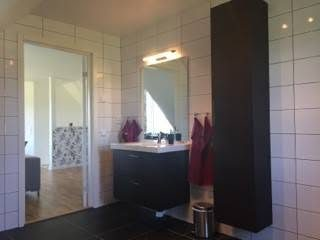
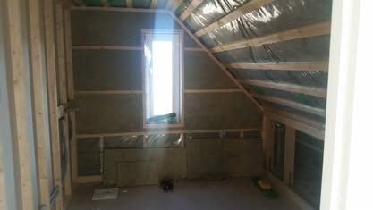
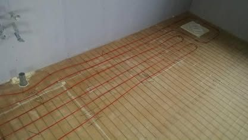
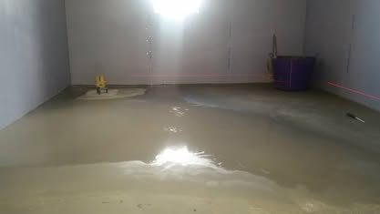
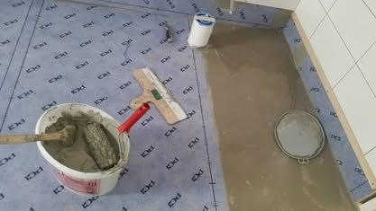
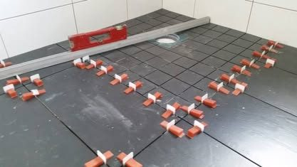
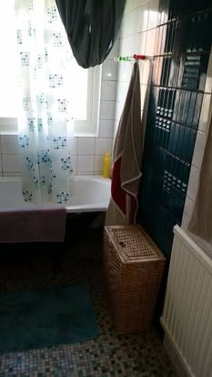
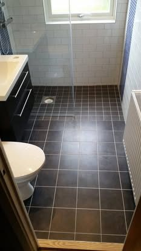

DG Snickeri & Bygg AB · Nödinge
Jag har jobbat i byggbranschen i 25 år och är behörig för våtrum hos BKR. Jag tar jobb i Ale, Kungälv, Göteborg och på Tjörn.



Det mesta jag gör är badrum. Rivning, golvvärme, tätskikt, kakel och klinker – allt enligt BKR:s branschregler.
Läs mer · senast: Badrum Trädgårdsvägen, Surte →
Från gjuten platta och stomme till takstolar och färdigt rum.
Läs mer · senast: Utbyggnad Backa Säteri, Backa Säteri →
Omläggning av tegeltak, nya läkt, papp och plåtdetaljer.
Läs mer · senast: Takbyte Tjörn, Tjörn →
Trädäck, räcken och trappor.
Läs mer · senast: Altan Rörö, Rörö →
Rivning, el- och vvs-förberedelser och montering av nytt kök.
Läs mer · senast: Kök, Harestad →
Hela rum eller delar av bostaden – det som behöver göras.
Läs mer · senast: Renovering Toråsvägen, Älvängen →Det mesta av ett badrum syns aldrig när det är klart. Så här såg det ut på vägen.





Badrummet på Olof Persvägen i Älvängen. Allt revs ut ner till stommen och byggdes upp på nytt med golvvärme, nytt tätskikt, vitt kakel och en rand av blå mosaik.
Se hela jobbet →


Daniel Götestam heter jag och jag driver DG Snickeri & Bygg. Jag har 25 år i branschen och gör det mesta inom bygg: service, renovering, ombyggnad, tillbyggnad och våtrum.
Jag är våtrumscertifierad hos BKR (Byggkeramikrådet). Det betyder att badrum jag bygger görs enligt branschreglerna för säkra våtrum.
Det är jag som kommer ut och tittar, jag som räknar på jobbet och jag som är på plats när det byggs.
 Behörig våtrum
Behörig våtrumEnklast är att ringa. Är jag mitt i ett jobb ringer jag tillbaka.
daniel@dgbyggservice.se
Norra Trolleviksvägen 14, 449 34 Nödinge
Kunder på Facebook har gett 5 av 5 i omdöme.